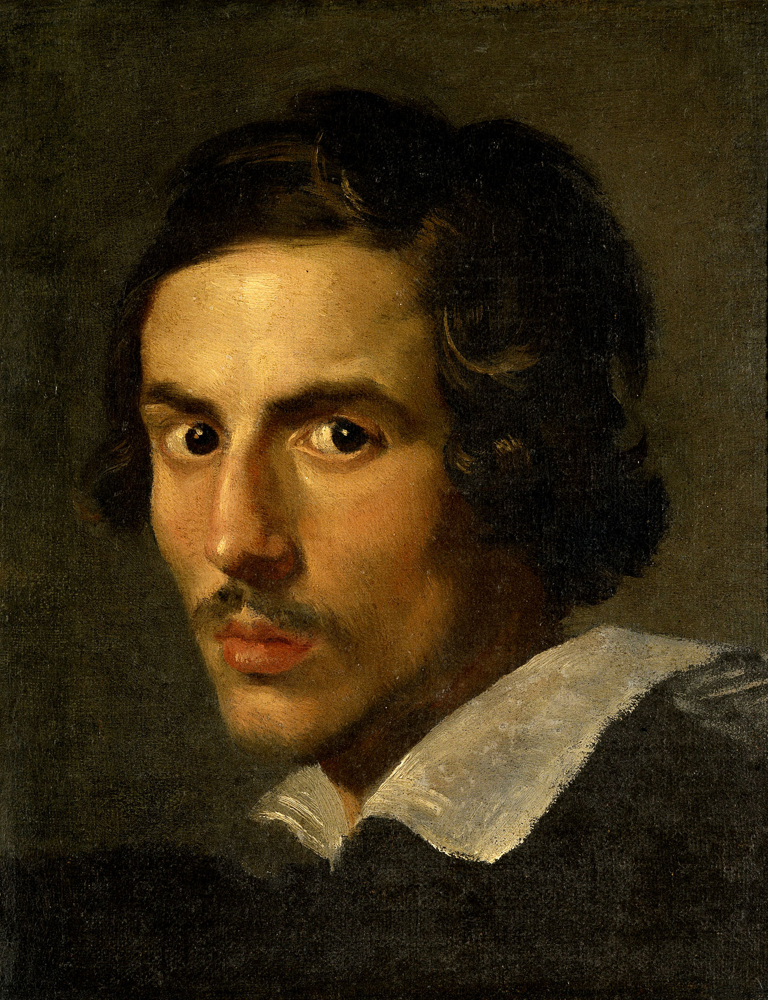
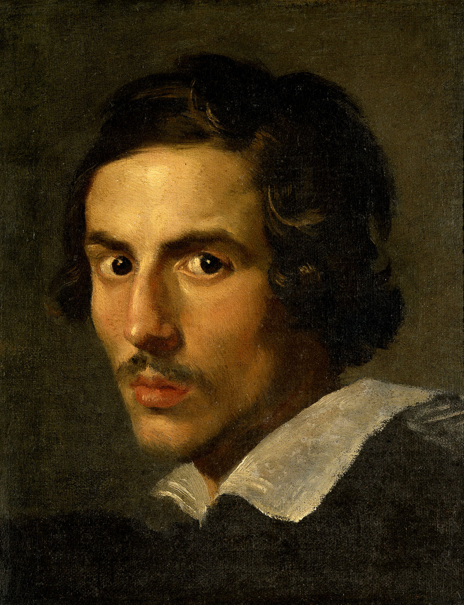

Apollo e Dafne
DESCRIZIONE OPERA
Apollo insegue Dafne perché è innamorato di lei. La ninfa invece non ricambia il desiderio del dio.
Così fugge verso il fiume e suo padre Peneo la trasforma in una pianta di alloro. Apollo ha raggiunto
Dafne e sta per afferrare la ninfa. Il dio è nudo e coperto da un panno stretto intorno alla spalla
destra e ai fianchi. I suoi capelli sono lunghi e si muovono elegantemente al vento. Apollo afferra
Dafne con la mano destra. Con la mano sinistra invece il dio si tiene in equilibrio nella corsa. Ai
piedi indossa dei calzari. Il dio si appoggia sulla gamba destra mentre la sinistra si sporge indietro.
Le sue labbra sono socchiuse e ansimano per la corsa e per il desiderio.
Dafne corre in avanti per sfuggire ad Apollo. La dea inarca il corpo per conquistare un po di vantaggio sul dio.
Dafne è nuda e il suo corpo si sta trasformando. I suoi piedi infatti diventano radici. La ninfa tenta di
sollevare
il piede destro già bloccato al suolo. La corteccia avvolge il suo corpo e le mani si alzano verso il cielo
trasformandosi
in foglie. Il viso della dea ha un’espressione spaventata e la sua bocca è spalancata per la corsa e la paura.
MITO
Il mito di Apollo e Dafne è concepito come un racconto naturalistico che spiega l’origine dell’alloro, ma in gran
parte tratta dei sentimenti degli dei che pur essendo immortali si comportano come gli umani. Infatti, in questo
racconto Cupido, offeso da Apollo, si vendica e lancia la freccia dell’amore contro Apollo e quella del ripudio
dell’amore a Dafne.
Quindi Apollo pur essendo un dio con fascino e prestigio, viene ripudiato da una ninfa (divinità minore), che pur
di sfuggire dal suo spasimante, che l’aveva offesa e disgustata con le sue profferte decide di essere trasformata
in alloro (che comunque è di una natura inferiore), per sfuggire al suo “innamorato” e conservare la verginità in
eterno.
Scannerizza il QRcode con la fotocamera del tuo cellulare per visualizzare l'opera in realtà aumentata
GIOVAN LORENZO BERNINI
Meglio conosciuto come Gian Lorenzo Bernini (Napoli, 7 dicembre 1598 – Roma, 28 novembre 1680), è
stato uno scultore, urbanista, architetto, pittore, scenografo e commediografo italiano.
Artista poliedrico e multiforme, Bernini è considerato il massimo protagonista della cultura figurativa barocca.
La sua opera conobbe un clamoroso successo e dominò la scena europea per più di un secolo dopo la morte;
analogamente,
l'influenza di Bernini sui contemporanei e sui posteri fu di enorme portata.
BERNINI SCULTORE
Le sculture di Gian Lorenzo Bernini sono caratterizzate da un'elettrizzante dinamicità (con il quale viene sorpreso
e fissato
l'attimo di movimento delle forme), da un potente virtuosismo tecnico, da un'incontenibile esuberanza espressiva, da
una vigorosa
rappresentazione psicologica e da una scenografica teatralità.
Prima di eseguire materialmente l'opera, Bernini esternava il proprio progetto mediante l'esecuzione di rapidi
schizzi
e appunti, oppure modellando piccoli bozzetti di argilla, mezzo progettuale certamente più affine allo spirito
berniniano.
L'argilla veniva maneggiata con una stecca dentata in osso alta dai 30 ai 45 centimetri; successivamente, il
modellino
veniva misurato con una scala calibrata suddivisa sul retro in sedici parti.
 
